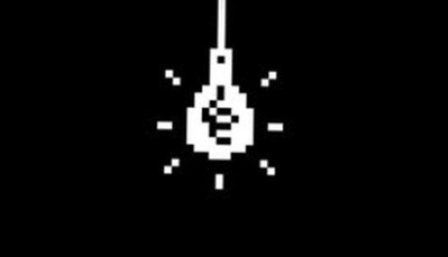
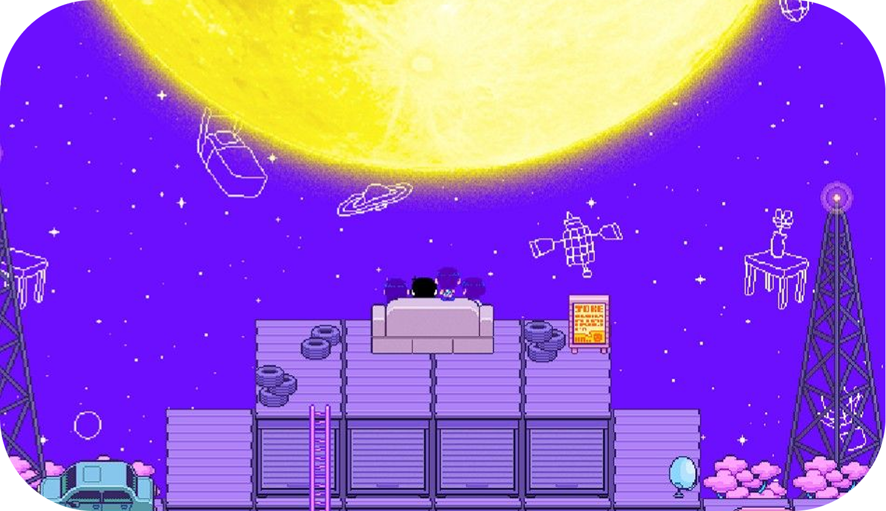

welcome to the black space...

About
OMORI is a psychological horror RPG about friendship, memories, and the worlds we create to escape reality. Explore a strange and colorful dream world filled with familiar faces, mysterious places, and unexpected adventures. As the story unfolds, the line between dreams and reality begins to blur, revealing a deeper story hidden beneath the cheerful world.
principal characters

sunny
Sunny is the real person behind Omori. After isolating himself from the outside world, he retreats into his dreams and creates Headspace as an escape from painful memories. Omori represents the version of himself that Sunny created to remain inside this dream world and avoid confronting reality.

omori
OMORI is the dream-world version of Sunny, created within Headspace as a way to escape painful memories. Unlike Sunny, Omori is quiet, emotionless, and seemingly unaffected by the past. He spends his time with his friends in Headspace, but his connection to Sunny becomes increasingly important as the truth behind the dream world is revealed.

basil
Real-world Basil is Sunny's childhood friend and one of the people closest to him. He is gentle, caring, and passionate about photography and gardening. Basil and Sunny share important memories from their childhood, but those memories also connect them to the painful events that Sunny has tried to hide.

basil Dreamworld
Dreamworld Basil is the version of Basil that exists within Headspace. He is based on Sunny's memories of the real Basil and represents the close friendship they once shared. Although he appears cheerful and caring, his presence is connected to memories that Sunny is trying to forget. His relationship with Omori reflects the bond between their real-world counterparts.

aubrey
Aubrey has changed drastically over the four years following Mari's death, morphing into a rebellious, pink-haired teenager who leads a local gang known as The Hooligans. Feeling abandoned and betrayed by her former friends during her darkest moments, she guards her profound grief and home instability behind a wall of anger, hostility, and a terrifying nail-bat. However, behind her tough facade lies a heartbroken girl longing for the connection she once lost.

aubrey dreamworld
Aubrey is an energetic, fierce, and tough-minded girl who wields a giant toy hammer in Headspace. She is fiercely protective of her friends—especially Omori, whom she holds a special fondness for—and frequently gets into petty, playful arguments with Kel. Despite her aggressive exterior and impulsive nature, Aubrey has a deeply sensitive heart and cares passionately about keeping the group together during their adventures.

kel
Kel has grown into a tall, friendly, and outgoing high school basketball player. Unlike others who isolated themselves after the tragedy, Kel processed his grief by staying active and reaching out to the community. He serves as the primary catalyst for the game's real-world events, persistently knocking on Sunny's door to draw him out of his four-year isolation and attempting to reunite their fractured friend group before Sunny moves away.

kel dreamworld
Kel is an effortlessly cheerful, hyperactive, and competitive boy who always strives to keep the group's spirits high. Armed with his trusty basketball, he relies on speed, enthusiasm, and unpredictable moves to overcome obstacles. Kel spends most of his time teasing Aubrey and causing chaotic situations, but beneath his playful and carefree demeanor, he is deeply loyal and dedicated to helping his friends.

hero
Hero is now a pre-med college student who appears mature, composed, and successful, striving to meet his parents' high expectations. Beneath his flawless reputation, however, Hero spent years trapped in severe depression and guilt following Mari's tragic death. Though he has managed to rebuild his life and maintain his kind, caring nature, returning home reawakens the unresolved grief and bittersweet memories of the past.

Hero
Hero is the eldest, most responsible, and universally loved member of the dream world group. Serving as a natural peacekeeper, he is the glue that holds everyone together, constantly stepping in to resolve heated arguments between Aubrey and Kel. He is a talented cook and baker whose meals restore the party's health, and his warm, reassuring presence makes him a dependable leader whenever the group faces danger.

Mari
Mari was Sunny’s loving, perfectionistic older sister and an exceptionally talented pianist. Her warm personality made her the beloved center of the entire friend group. Her sudden, tragic death four years ago completely shattered her family and friends, creating a deep pool of trauma, guilt, and unanswered questions that haunt Sunny and ultimately drive the central narrative of the game.

mari dreamworld
Mari is Sunny’s kind, nurturing older sister who appears at various cozy picnic spots throughout Headspace. She acts as a gentle guide and a safe haven for the group, offering saving points, words of encouragement, and delicious snacks. Always watching over them with a warm smile, Mari represents a comforting reminder of happier times and encourages everyone to rest whenever the journey becomes overwhelming.

thing?
???
Important Places

Headspace is a colorful dream world created from Sunny's imagination. It is filled with strange creatures, familiar faces, mysterious locations, and endless adventures. Although everything seems bright and playful, Headspace hides memories and emotions beneath its cheerful surface. Omori and his friends travel through this world while searching for adventures, solving problems, and discovering its many secrets.